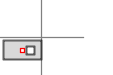
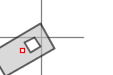
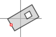
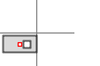
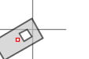
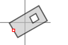

- java.lang.Object
-
- org.openmap4u.commons.TransformUtil
-
public class TransformUtil extends Object
- Author:
- Michael Hadrbolec
-
-
Constructor Summary
Constructors Constructor and Description TransformUtil()
-
Method Summary
All Methods Instance Methods Concrete Methods Modifier and Type Method and Description AffineTransformgetGlobalTransform(AreaOfInterestTransformable areaOfInterest)Gets the global transformation based on the given area of interest.Point2DgetPoint(Point<?,?> point, Shape shape)Gets the point position on a given shape.Point2DgetPointInvers(Point<?,?> point, Shape shape)Gets the point position on a given shape.Point2DinverseTransform(Point2D point2Transform, AffineTransform globalTransform)Transforms the given point from the provided global transformation back into the world units.AffineTransformtransform(AffineTransform globalTransform, AffineTransform individualTransform)AffineTransformtransform(AffineTransform globalTransform, Point2D point, double scaleX, double scaleY, DrawableTransformable individualTransform, Shape shape)Gets overall transformation based on the given global trnasformation the point (in the case it is a point) the scale x and scale y factor to adjust to output format units.transformationPoint2Dtransform(Point<?,?> position, Shape shape, AffineTransform globalTransform)Transforms the position of the given shape back into a point in world units.Point2Dtransform(Point2D point2Transform, AffineTransform globalTransform)Transform the given point with the provided global transformation.
-
-
-
Method Detail
-
getPoint
public final Point2D getPoint(Point<?,?> point, Shape shape)
Gets the point position on a given shape.- Parameters:
point- The position, whose point should be retrieved.shape- The shape.- Returns:
- The resulting point.
-
getPointInvers
public final Point2D getPointInvers(Point<?,?> point, Shape shape)
Gets the point position on a given shape.- Parameters:
point- The position, whose point should be retrieved.shape- The shape.- Returns:
- The resulting point.
-
transform
public final Point2D transform(Point2D point2Transform, AffineTransform globalTransform)
Transform the given point with the provided global transformation.- Parameters:
point2Transform- The point to be tranformed.globalTransform- The global transformation to be apllied to the point.- Returns:
- The resulting transfromed point.
-
inverseTransform
public final Point2D inverseTransform(Point2D point2Transform, AffineTransform globalTransform) throws NoninvertibleTransformException
Transforms the given point from the provided global transformation back into the world units.- Parameters:
point2Transform- The point to be transfromed back into world units.globalTransform- The global transformation.- Returns:
- The resulting transformed point.
- Throws:
NoninvertibleTransformException- Is thrown in the case the global trnasformation is not invertable.
-
transform
public final AffineTransform transform(AffineTransform globalTransform, Point2D point, double scaleX, double scaleY, DrawableTransformable individualTransform, Shape shape)
Gets overall transformation based on the given global trnasformation the point (in the case it is a point) the scale x and scale y factor to adjust to output format units.transformation- Parameters:
globalTransform- The global transformation.point- The point (in the case it is a point= or null if not.scaleX- The scaleX factor to adjust to the output format.scaleY- The scaleY factor to adjust to the output format.individualTransform- The individual transformation.
Remark: It is composed of the following transformations in the following fixed order: translation (=offset), rotation, scaling and finally alignment.
e.g.: start offset  rotate scale  align 
offset  rotate scale  align shape- The shape to draw.- Returns:
- The resulting transformation.
-
transform
public final AffineTransform transform(AffineTransform globalTransform, AffineTransform individualTransform)
-
getGlobalTransform
public AffineTransform getGlobalTransform(AreaOfInterestTransformable areaOfInterest)
Gets the global transformation based on the given area of interest.- Parameters:
areaOfInterest- The area of interest.- Returns:
- The resulting global transform.
-
transform
public Point2D transform(Point<?,?> position, Shape shape, AffineTransform globalTransform) throws NoninvertibleTransformException
Transforms the position of the given shape back into a point in world units.- Parameters:
position- The position.shape- The shape whose position should be retrieved.globalTransform- The global transformation.- Returns:
- The position in world units.
- Throws:
NoninvertibleTransformException- Is thrown in the case the global transformation cannot be inverted.
-
-